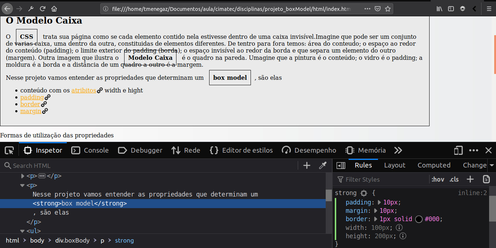
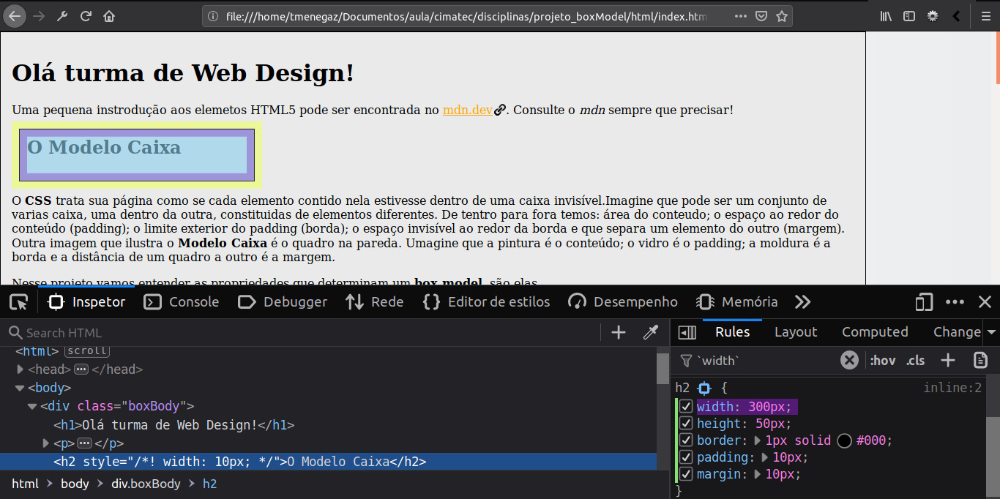
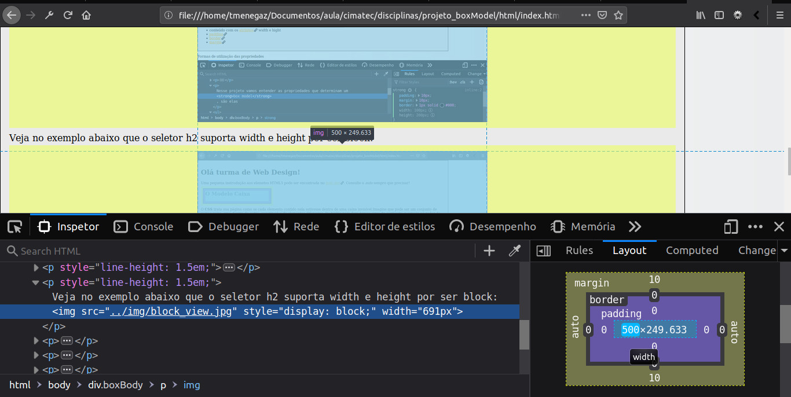

Uma pequena instrodução aos elemetos HTML5 pode ser encontrada no mdn.dev. Consulte o mdn sempre que precisar!
O CSS trata sua página como se cada elemento contido nela estivesse dentro de uma caixa invisível.Imagine que pode ser um conjunto de varias caixa, uma dentro da outra, constituidas de elementos diferentes. De tentro para fora temos: área do conteudo; o espaço ao redor do conteúdo (padding); o limite exterior do padding (borda); o espaço invisível ao redor da borda e que separa um elemento do outro (margem). Outra imagem que ilustra o Modelo Caixa é o quadro na pareda. Umagine que a pintura é o conteúdo; o vidro é o padding; a moldura é a borda e a distância de um quadro a outro é a margem.
Nesse projeto vamos entender as propriedades que determinam um box model, são elas
Formas de utilização das propriedades
margin
borda
padding
Conteúdo com W x H
Crie um arquivo html com um parágrafo no body e aplique o css a fim de experimentar o modelo de caixa.
Para um certo elemento você pode definir a altura e a largura que será reservada para o conteúdo. Os elementos podem ser parágrafos, divs, títulos etc. como display: block ou display: inline-block (em linha com comportamento de bloco);. Exitem ainda, os elementos pharsing content (display: inline; por padrão), que não podem receber propriedades width e height.
O display determina o tipo de exibição natural para um elemento. O comportamento do "display: block;" permite determinar width, height, margin e paddding nos quatro lados. Enquanto que o "display: inline;" não permite width e height"
Veja no exemplo abaixo que o seletor strong não suporta width e height por ser inline:
Veja no exemplo abaixo que o seletor h2 suporta width e height por ser block:
É importante saber que width pode ter seus valores em unidades de em, px ou porcentagem do elemento pai. Enquanto height pode ter apenas em e px.
O padding é o espaço a mais ao redor dos conteúdos de um elemento, mas dentro da borda. Você pode alterar a espessura do padding mas não a sua cor ou textura. No esntanto, o background de um elemento eparece na área do padding.
É possível criar uma borda ao redor ou em apenas um dos lados da caixa, configurar a espessura, estilo e cor.
A margem é a quantidade de espaço transparente entre um elemento e o próximo. Veja na imagem abaixo a combinação do width com a marrem para centralizar a imagem: "width: 500px; magin 10px auto;". Observe que a parte em amarelo é definida pelo agente do usuário (browser) com os mesmos valores máximos possíveis. 